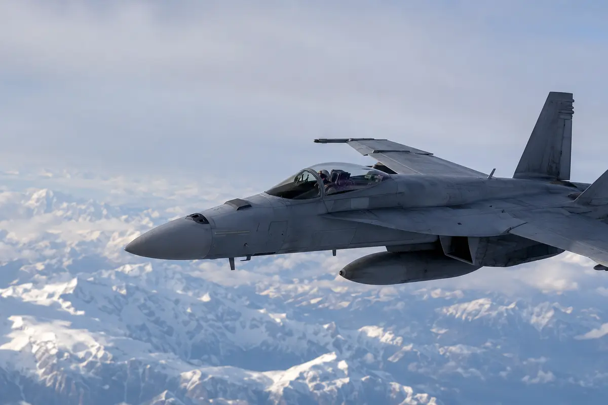

AVIATIONWEY STUDIO
Voir l’aviation
en mouvement.
Les appareils, les hangars, les essais, les équipes et les archives possèdent une matière que le texte seul ne remplace jamais. Studio est l’espace vidéo autonome d’AviationWey.
FEATURE / COMMERCIAL AVIATION
Programmes, appareils et opérations : faire voir ce qui se joue derrière une silhouette.

DEFENSE / FLIGHT / CAPABILITYVIDEO LIBRARY
Chaque film est relié à son sujet, son appareil, son programme et ses sources.
Une sélection vidéo pensée comme une bibliothèque éditoriale, et non comme une suite de liens intégrés sans contexte.
Explorer la bibliothèque →